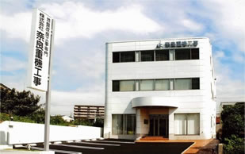
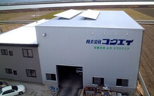
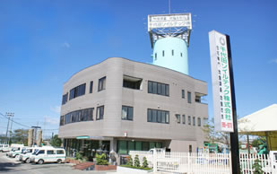

［事務局］
株式会社奈良重機工事
〒 458-0023
愛知県名古屋市緑区鴻仏目一丁目115番地
TEL 052-877-8281
FAX 052-877-8271
E-mail info@ssw-pile.jp
http://www.narajuki.jp/

株式会社 コクエイ
〒702-8024
岡山県岡山市南区浦安南町16-5
TEL 086-264-5821
FAX 086-262-5399
E-mail info@kokuei.com
http://www.kokuei.com

株式会社 システムプランニング
〒981-3133
宮城県仙台市泉区泉中央3-18-4オフィス21-4Ｆ
TEL 022-374-9808
FAX 022-374-9235
E-mail info@kk-sp.co.jp
http://www.kk-sp.co.jp
大東建託 株式会社
〒108-8211
東京都港区港南二丁目16番1号
品川イーストワンタワー21～24階
（総合受付24階）
※品川駅から2階エントランスへ直結
http://www.kentaku.co.jp/
千代田ソイルテック 株式会社
〒340-0823
埼玉県八潮市古新田325番地
TEL 048-995-9876
FAX 048-995-9803
chiyoda@t-soiltech.co.jp
http://www.t-soiltech.co.jp/

株式会社 フジタ地質
〒703-8204
岡山市中区雄町425番地1
TEL 086-208-3950
FAX 086-208-3951
info@geo-fujita.jp
http://www.geo-fujita.jp/